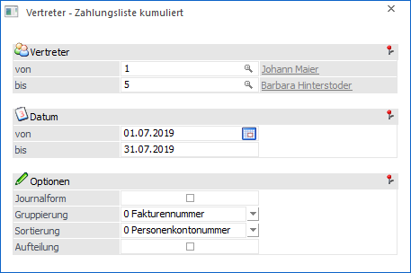
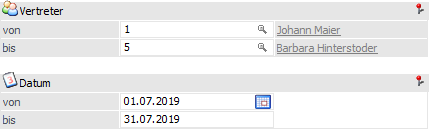
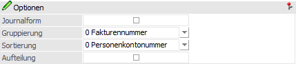
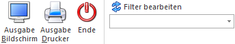

Über den Menüpunkt…
1 WinLine FAKT
1 Auswertungen
1 Vertreterauswertungen
1 Vertreter - Zahlungsliste kumuliert
… kann eine kumulierte Zahlungsliste für Vertreter ausgegeben werden.

Selektion

Ø Vertreter von / bis
An dieser Stelle wird definiert, welche Vertreter ausgewertet werden sollen. Über die Matchcodefunktion (Lupen-Symbol oder F9-Taste) kann nach allen angelegten Vertretern gesucht werden.
Ø Datum von / bis
Mit dieser Einschränkung kann auf das Übernahmedatum selektiert werden.
Optionen

Ø Journalform
Wird diese Option aktiviert, dann wird die Auswertung in Journalform durchgeführt. Bleibt die Checkbox inaktiv, dann wird für jeden Vertreter eine eigene Seite begonnen.
Ø Gruppierung
Hier kann entschieden werden, nach welchem Kriterium die Auswertung zusammengefasst werden soll. Hierfür stehen folgende Varianten zur Verfügung:
ü 0 - Fakturennummer
ü 1 - Personenkontennummer
Ø Sortierung
Hier kann entschieden werden, nach welchem Kriterium die Auswertung sortiert werden soll. Hierfür stehen folgende Varianten zur Verfügung:
ü 0 - Personenkontennummer
ü 1 - Namen
Ø Aufteilung
Wird diese Option aktiviert, dann wird pro Vertretergruppe die Aufteilung des Gruppenbetrages angedruckt.
Buttons

Ø Ausgabe Bildschirm
Mit Hilfe des Buttons "Ausgabe Bildschirm" oder der Taste F5 wird die Auswertung am Bildschirm ausgegeben.
Ø Ausgabe Drucker
Durch Anwahl des Buttons "Ausgabe Drucker" wird die Auswertung am Drucker ausgegeben.
Ø Ende
Durch Anwahl des Buttons "Ende" bzw. der Taste ESC wird die Auswertung geschlossen.
Ø Filter bearbeiten
Durch Anklicken des Buttons "Filter bearbeiten" kann die Auswertung nach frei definierbaren Kriterien eingeschränkt werden.